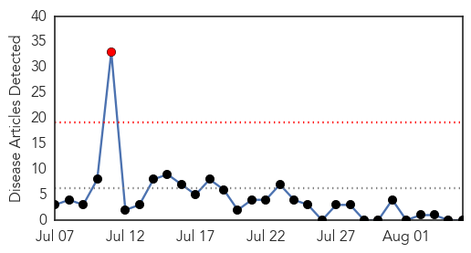

Measles
30-Day Web Trend
1 alerts, 0 warnings

30-Day Twitter Trend
0 alerts, 0 warnings

Article Locations

Article Confidences

Top Articles:
-
No articles found for Aug 05, 2014
Top Tweets:
-
No tweets found for Aug 05, 2014
Unknown
30-Day Web Trend
8 alerts, 3 warnings

30-Day Twitter Trend
4 alerts, 0 warnings

Article Locations
Article Confidences

Top Articles:
- 0.984
- Ramadan pilgrimage season in Saudi Arabia mostly free from Mers
- 0.949
- What is Japanese Encephalitis? Know its causes, symptoms and precautions
- 0.944
- Irish hero helps to battle outbreak
- 0.917
- Chicago Tribune
- 0.917
- Chicago Tribune
- 0.917
- Chicago Tribune
- 0.917
- Chicago Tribune
- 0.914
- Herpes virus to blame for Rock River carp kill in WisconsinThe Rock River Times
- 0.904
- Japanese encephalitis virus threat in Asia
- 0.893
- Korea issues warning on Japanese encephalitis
- 0.868
- Encephalitis fears echo in Indian parliament
- 0.866
- Russia calls emergency U.N. Security Council meeting on Ukraine
- 0.866
- One dead, 14 wounded in Afghan training academy attack
- 0.866
- British armed police escort man off Qatar Airways plane at Manchester
- 0.866
- Coalition forces say incident at Kabul military academy, casualties feared
- 0.866
- Tropical storm Bertha forms off the eastern Barbados coast
- 0.796
- Observer
- 0.794
- BMC warns GPs: undergo training in administering TB drugs or lose licence
- 0.791
- DFID steps up support for emergency health and sanitation in Gaza - occupied Palestinian territory
- 0.790
- Second hantavirus-related death in Sask., health officials say
- 0.789
- Baltics and Poland unite to battle African swine fever
- 0.782
- LymeDisease.org Endorses New Evidence-Based Lyme Guidelines: ILADS Guidelines Allow Patients to Understand Treatment Options and Make Informed Choices
- 0.772
- DFID steps up support for emergency health and sanitation in Gaza
- 0.728
- Sickness bug grips Egyptian holiday resort - with some patients on drips
- 0.700
- Msipa’s sneer of Mugabe ironic
- 0.697
- Times Of Swaziland
- 0.697
- Holidaymakers struck down by sickness bug at Egyptian resort
- 0.682
- Jefferson County Health Officials Warn About ‘Rabbit Fever’ « CBS Denver
- 0.677
- African swine fever confirmed on Skaista Country farm :: The Baltic Course
- 0.620
- Thomson say it is safe to travel to resort in Sharm el Sheikh despite illness outbreak
- 0.603
- Call to help ease high volumes at A&E
- 0.602
- Centre's move to bring Rotavirus vaccine has researchers divided
- 0.598
- Toxins in water leads to state of emergency in Ohio
- 0.579
- More than 400,000 in Ohio without drinking water
- 0.567
- Year-round preventive treatment reduces malaria risk in young children
- 0.542
- Free helpline for moms and dads: Talk to a nurse around-the-clock
- 0.527
- Health officials in Calvert County warn of flesh-eating bacteria risk in Chesapeake Bay
- 0.526
- Nashua hospitals do well in measure of health-related infections
- 0.521
- Medical tourism makes Ontario vulnerable to legal challenge, says nursing leader
- 0.519
- Drinking, bathing water ban lifted in Toledo, SE Mich after microcystin, cyanotoxin contamination
- 0.519
- Common tuberculosis vaccine can be used to prevent infection as well as disease
- 0.516
- SGGP English Edition- Medical clinics detected to have wrongdoings
- 0.516
- Between Shifa and Soroka
- 0.515
- Year-round preventive treatment reduces malaria risk in young children
- 0.513
- 'Crowdsourcing' the answer to medical mysteries?
- 0.502
- Alzheimer’s Disease Patients Cannot Be Sued
Top Tweets:
- 0.715
- RT: @RubenCalegari ¡De nada! Eso sí, si en esta época de malaria, conseguís juntar guita, la próxima te contrato de baterist…
- 0.672
- RT: Te atreves a salvar la vida de otros? Cada 45 segundos una persona muere de malaria en Africa, la campaña Nothing... http:/…
- 0.660
- RT: (LosDelSonido) Salud Pública dice que el combate de la malaria avanza en la República Dominicana: SANTO DOMINGO. De lo…
- 0.660
- RT: (LosDelSonido) Salud Pública dice que el combate de la malaria avanza en la República Dominicana: SANTO DOMINGO. De lo…
- 0.654
- RT: Salud Pública dice que el combate de la malaria avanza en la República Dominicana: SANTO DOMINGO. De los 155 municipios de…
- 0.654
- RT: Salud Pública dice que el combate de la malaria avanza en la República Dominicana: SANTO DOMINGO. De los 155 municipios de…
- 0.641
- Bauza: "Nacional no es el Milan de Arrigo Sacchi": Historia. Eso es lo que se juega en la final de la Libertad... http://t.co/g8g8phL8bc
- 0.604
- RT: Un nuevo fármaco elimina en unas 12 horas el parasito en enfermos de Malaria http://t.co/8NwGenT5B7
- 0.594
- RT: Salud Pública dice que el combate de la malaria avanza en la República Dominicana: SANTO DOMINGO. De los 155 municipios del …
- 0.594
- RT: Salud Pública dice que el combate de la malaria avanza en la República Dominicana: SANTO DOMINGO. De los 155 municipios del pa…
- 0.585
- RT: Salud Pública dice que el combate de la malaria avanza en la República Dominicana: SANTO DOMINGO. De los 155 municipios…
- 0.585
- RT: Salud Pública dice que el combate de la malaria avanza en la República Dominicana: SANTO DOMINGO. De los 155 municipios …
- 0.581
- RT: Un hallazgo en el mosquito de la malaria abre la vía a nuevos anticoagulantes http://t.co/krUfVHmOdu
- 0.553
- RT: Alerta sanitaria en El Progreso por brote de malaria radiohrn
- 0.549
- RT: Salud Pública dice que el combate de la malaria avanza en la República Dominicana: SANTO DOMINGO. De los 155 m... http:…
- 0.549
- RT: Salud Pública dice que el combate de la malaria avanza en la República Dominicana: SANTO DOMINGO. De los 155 m... http:…
- 0.549
- RT: Salud Pública dice que el combate de la malaria avanza en la República Dominicana: SANTO DOMINGO. De los 155 m... http:…
- 0.549
- RT: Salud Pública dice que el combate de la malaria avanza en la República Dominicana: SANTO DOMINGO. De los 155 m... http:/…
- 0.549
- RT: Salud Pública dice que el combate de la malaria avanza en la República Dominicana: SANTO DOMINGO. De los 155 m... http://…
- 0.549
- RT: Salud Pública dice que el combate de la malaria avanza en la República Dominicana: SANTO DOMINGO. De los 155 m... http://…
- 0.549
- RT: Salud Pública dice que el combate de la malaria avanza en la República Dominicana: SANTO DOMINGO. De los 155 m... http://t.…
- 0.549
- RT: Salud Pública dice que el combate de la malaria avanza en la República Dominicana: SANTO DOMINGO. De los 155 m... http://t.…
- 0.549
- RT: Salud Pública dice que el combate de la malaria avanza en la República Dominicana: SANTO DOMINGO. De los 155 m... http://t.c…
- 0.538
- RT: Salud Pública dice que el combate de la malaria avanza en la República Dominicana
- 0.538
- RT: Salud Pública dice que el combate de la malaria avanza en la República Dominicana
- 0.538
- RT: MeConTrolaÑuclyAria Salud Pública dice que el combate de la malaria avanza en la República Dominicana: SANTO D... MeC…
- 0.538
- RT: Either flu or malaria Real problem in Africa. all flu like get diagnosed as Malaria because it's so common. @8keith Eb…
- 0.538
- RT: (♥MeLoVeDiaNa♥ Salud Pública dice que el combate de la malaria avanza en la República Dominicana (♥MeLoVeÑuclyArias♥
- 0.525
- de tooo' üò¢ necesito las medallas que nos ofrecimos hace un tiempo atras'
- 0.523
- RT: @pajarofelix no sólo eso: investigación en malaria o fiebre amarilla es insignificante frente a enfermedades metabólicas de so…
- 0.504
- RT: frederick_x5 follow Salud Pública dice que el combate de la malaria avanza en la República Dominicana: SANTO DOMI... fre…